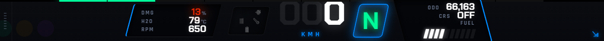

Two windows
The app runs as two windows that never look like two windows. The first is the overlay: transparent, borderless, shadowless and click-through, sitting on top of the game so it reads as part of the dashboard rather than software running over it.
The second is Nordan Command, where a driver arranges the overlay. What it shows, where it sits, what colour it is. Everything gets adjusted there, and the overlay can be locked outright, so it never needs to be interactive and never steals a mouse click meant for the truck.


Engineering
Four problems worth writing about
Reading the game's memory
A Rust loop uses the Win32 API to open the game's
Local\SCSTelemetry memory-mapped file and reads the raw
bytes directly: speed, RPM, damage arrays and the rest. Nothing gets
polled over a socket or scraped from a log, so what the overlay shows
is what the physics engine wrote on the last tick. Speed arrives in
metres per second and gets converted to km/h and mph on the way to the
UI.
Knowing when to disappear
The overlay hides itself by watching the game's own clock. If in-game time stops advancing, the game is paused, minimised or closed, and the overlay vanishes. When the clock starts again it comes back. Nordan Command reports the same thing back to the driver, sitting in a Waiting state until the game is actually running.
A window that isn't there
Tauri exposes enough of the OS window flags to build a canvas with no border, no shadow and no hit-testing, layered over a DirectX fullscreen window. Clicks pass straight through to the game. The overlay is visible and, as far as the mouse is concerned, absent.
Instruments a driver can tune
The Vue 3 front end is an instrument cluster where every readout is a module that can be switched off: warning cluster, water temperature, gear, cruise, speed limit, fuel bar, GPS odometer. Damage can be hidden, simple or detailed. Shift-light redline, km/h against mph and °C against °F are all per driver, because the trucks and the people driving them don't agree on any of it. Choices go to local storage and come back on next launch.
Why Rust
The read loop runs continuously while someone is driving, next to a game that wants every frame it can get. Rust keeps that loop cheap and predictable, and gives a safe way to handle raw pointers into a memory-mapped region, which is exactly the sort of code that's unpleasant to get wrong. Tauri then wraps it in a web front end, so the interface can be built with Vue instead of a native widget toolkit.
Available for work
Want something like this built?
Desktop tooling, telemetry, or anything that has to read a system it doesn't own. Happy to talk it through.